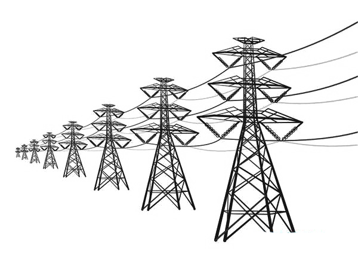
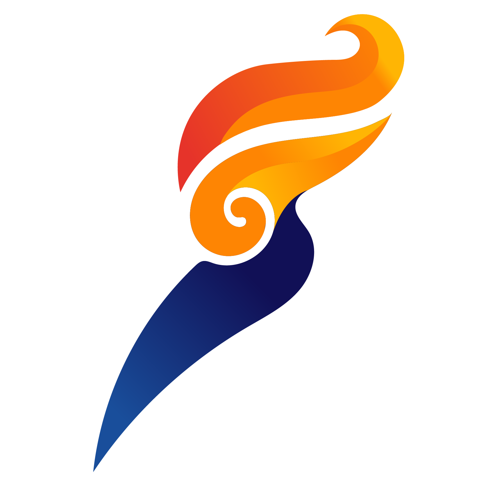

Satu pintu akses ke seluruh platform pemantauan Unit Pelaksana Transmisi Palangkaraya.
Kinerja UPT & ULTG, ABO, 4DX, Common Enemy, dan AHI dalam satu dashboard.
Pemantauan titik panas Karhutla di sekitar tower dan jalur transmisi, dengan klasifikasi tingkat risiko.
Progres validasi lapangan dan temuan kritis Right of Way di sepanjang jalur transmisi.
Analisis sambaran petir 2021–2026, tahanan pentanahan, dan tower paling rawan.
Monitoring kesehatan, keselamatan kerja, lingkungan, dan keamanan di lingkungan UPT Palangkaraya.
Intelijen operasional sinyal tower & sambaran petir se-Kalimantan, dengan notifikasi WhatsApp bot.